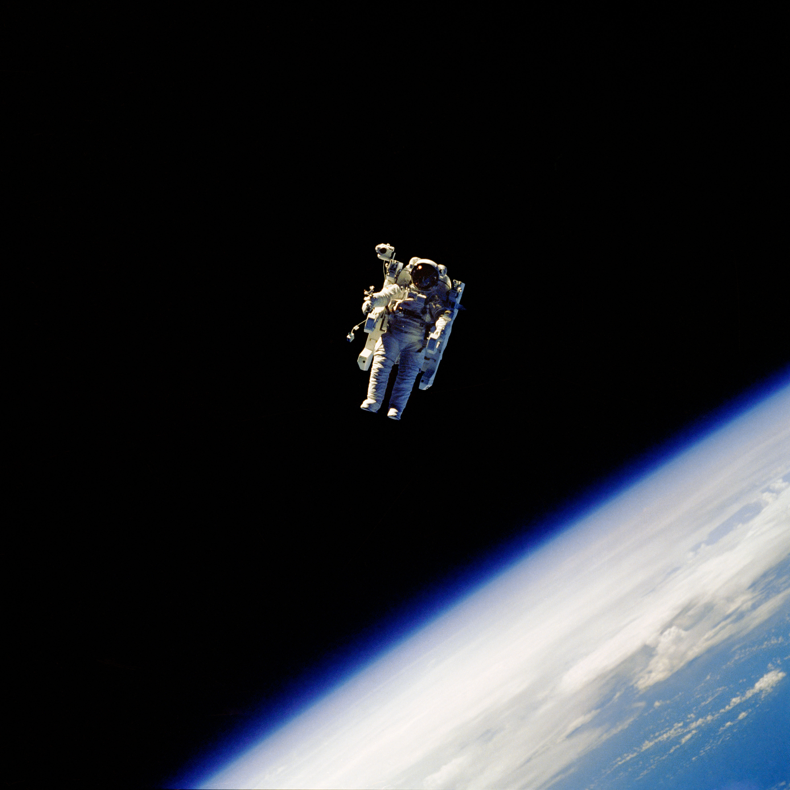
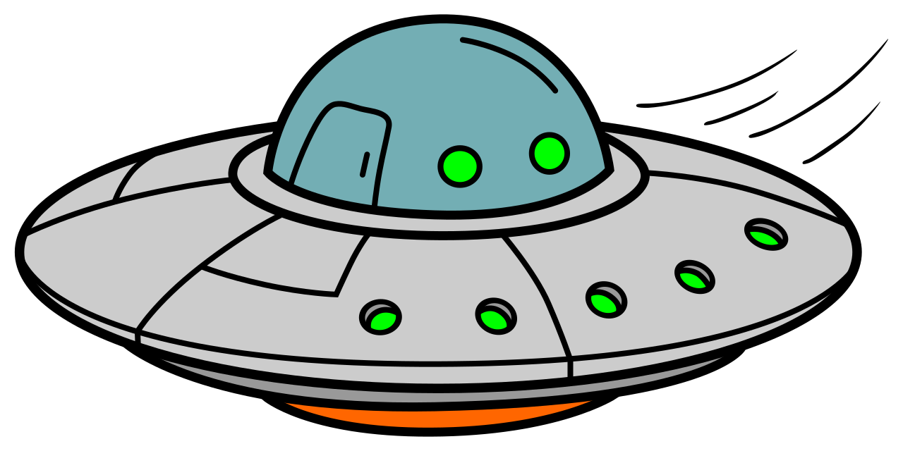
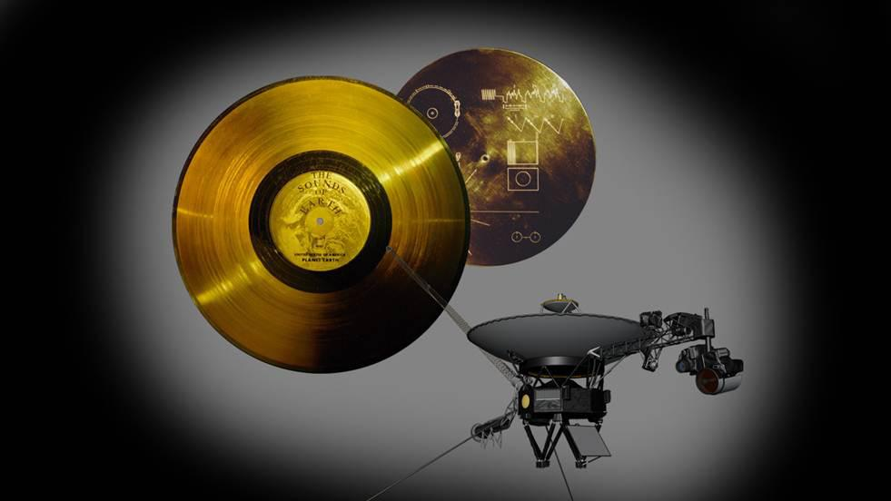
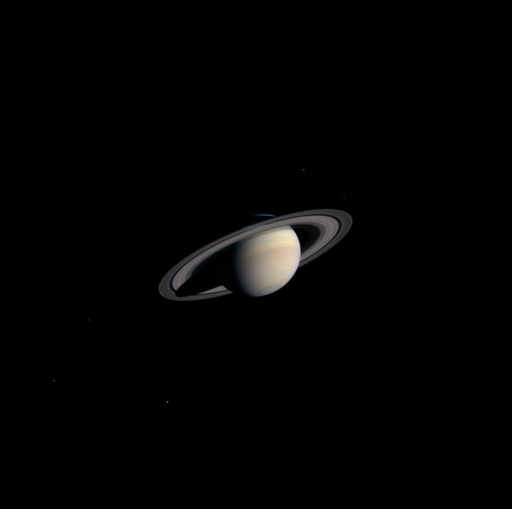

Do We Even Know Our Own World?

You ever start a conversation with a friend that just... never ends? You bring up one thing, they bring up something else, and three hours later you're still talking because there's always another question waiting behind the last one. That's what thinking about space does to me. So let's just talk.
ARE WE ACTUALLY ALONE?
Here's the thing that keeps me up at night. Astronomers have confirmed more than six thousand planets outside our solar system, and at least one in every four stars has a planet that's about the size of Earth, rocky, and sitting in the temperature range where life could exist (Phys.org). With numbers like that, there should be someone else out there. Somebody, somewhere, should have said hello by now.

But space has stayed completely silent. Scientists even have a name for this, the Fermi Paradox, after a physicist who once asked at lunch, "where is everybody?" It's been over seventy years, and we still don't have an answer.
So which is scarier: that we're surrounded by billions of possible homes for life and nobody's out there, or that someone is out there and just hasn't reached us yet? Because if they do reach us, then what? Do we go to war? Do we trade ideas? Do we learn an entirely new language, a new way of thinking, a new way of being alive? I don't know. Nobody does. That's kind of the whole point.

WHAT ELSE IS FLOATING OUT THERE?
Okay, follow me here for a second. Let's say we never meet another civilization. Space could still change everything about how we live, just from what's sitting out there waiting to be found.
Take helium-3. It's incredibly rare on Earth, but it's soaked into the surface of the moon, left behind by billions of years of solar wind. Some scientists think it could power fusion reactors, clean energy on a scale we've never had access to, using barely any fuel at all (Thermo Fisher Scientific). There's also an asteroid called Psyche that might be half metal, holding more iron and nickel than humanity could mine in millions of years (Polytechnique Insights).

Now stretch that thinking further. If that's what we've already found, what about the stuff we haven't? What if there's a material out there that could power an entire civilization off a teaspoon of it? What if the next great human breakthrough isn't something we invent, but something we just have to go out and grab?
WHERE DOES THIS ALL GO?
I keep coming back to the same thought. Right now, we're basically a species standing at the edge of our own front yard, looking out at a neighborhood we've barely explored. What happens when we actually start walking around in it?
That's really what this whole site is about. Not answers. Just the questions that keep leading to more questions, the ones that make you stare at the ceiling a little too long before you fall asleep.